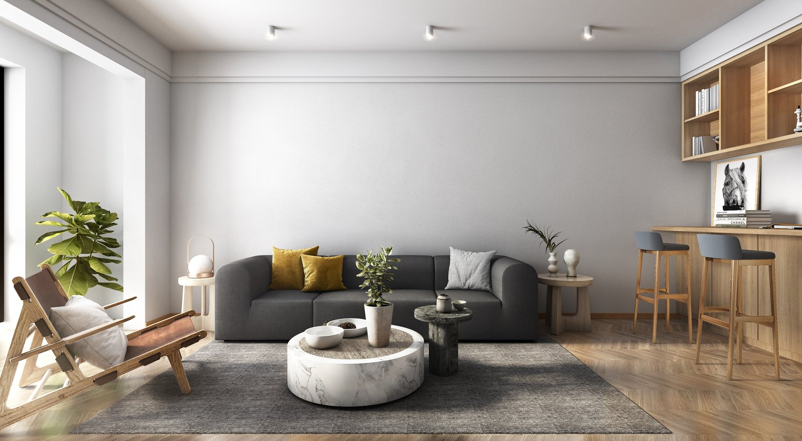

業務内容
建築の図面作成から、計算・申請・積算・BIM・電子化まで。対応内容、依頼時に必要な資料、納品可能な形式をサービスごとに掲載しています。初めて外注をご検討の方もご確認いただけます。
図面作成・設計補助
意匠・構造・設備の図面作成を、設計者様の手を離れる部分から引き受けます。メーカー様・設計事務所様・工務店様の図面作成補助、現場補助にも対応いたします。
| 対応内容 |
|
|---|---|
| こんな企業・場面に | 設計事務所、工務店、ハウスメーカー、建材メーカーの設計担当部門 |
| ご依頼時に必要な資料 | 元図面（CADデータまたは紙）、仕様書、参考図、指定の作図基準があればその資料 |
| 納品可能な形式 | DWG／DXF／JWW／JWC／SFX／MPZ／PDF ほか（ご指定の形式に対応） |
構造計算・省エネ計算等のサポート
建築全般の構造計算、および省エネ計算のサポートを行います。2025年4月の法改正に対応しています。
| 対応内容 |
|
|---|---|
| こんな企業・場面に | 設計事務所、工務店、ハウスメーカーの設計・申請担当部門 |
| ご依頼時に必要な資料 | 意匠図、構造図、仕様書、計算条件の分かる資料 |
| 納品可能な形式 | 計算書（PDF）、計算データ ほか（ご指定の形式に対応） |
使用している計算ソフト
実物件の計算書は個人情報を含むため、当社で使用している計算ソフトをご紹介します。出力例は各メーカーのサイトでご覧いただけます。
- アーキトレンド（構造）（外部サイト・別ウィンドウで開きます）
- アーキトレンド（省エネ）（外部サイト・別ウィンドウで開きます）
- ホームズ君（構造）（外部サイト・別ウィンドウで開きます）
- ホームズ君（省エネ）（外部サイト・別ウィンドウで開きます）
※省エネ計算は、標準計算のほか、仕様基準での計算にも対応しています。
申請書・建築関連書類の作成
確認申請をはじめとする建築関連書類の作成・事務支援を行います。書類作成に取られる時間を、本来の設計業務に戻していただけます。
| 対応内容 |
|
|---|---|
| こんな企業・場面に | 設計事務所、工務店、官公庁・自治体案件の申請担当部門 |
| ご依頼時に必要な資料 | 申請対象の図面一式、建物概要、既往の申請書類があればその写し |
| 納品可能な形式 | 申請書類一式（Word／Excel／PDF ほか、ご指定の形式に対応） |
対応している書類の種類
実際の申請書類は個人情報を含むため、対応可能な書類の種類をご紹介します。下記のほか、ご要望に応じて各種申請関連図書の作成が可能です。
- 建築確認申請、概要書、工事届、浄化槽設置届、性能評価、長期優良住宅、フラット35、低炭素、ZEH（BELS）、東京ゼロエミ（仕様・性能）、43条（接道）、53の2（最低敷地）
- 中高層関連、都計法53条（都市計画施設）、都計法58条（風致）、都計法58条の2（風致）、景観条例、急傾斜地、狭あい、水路占用、文化財保護法（埋蔵文化財）、宅造法、各条例（災害危険区域、小規模開発 など）
施工図・各種建築図面
仕上げ図・躯体図をはじめとする施工図を作成いたします。設計図から施工図への展開、現場からの変更反映まで対応いたします。
| 対応内容 |
|
|---|---|
| こんな企業・場面に | 建設会社、サブコン、専門工事会社の施工図担当部門 |
| ご依頼時に必要な資料 | 設計図一式、現場条件の分かる資料、施工図作成基準 |
| 納品可能な形式 | DWG／DXF／JWW／PDF ほか（ご指定の形式に対応） |
BIM・3Dモデルデータ作成
2次元図面からのBIMモデル化、3Dモデルデータの作成を行います。3Dデータのみでのお見積り・ご依頼にも対応しています。
| 対応内容 |
|
|---|---|
| こんな企業・場面に | 設計事務所、ゼネコン、メーカー、ソフトメーカーのBIM推進・設計部門 |
| ご依頼時に必要な資料 | 2次元図面（CADデータまたはPDF）、モデリング範囲・LODのご指定 |
| 納品可能な形式 | BIMモデルデータ、3Dデータ、中間ファイル（stp／x_t／iges）ほか |
VR・3DCGパース
プレゼンテーションでは視覚情報が重視され、鮮やかな色彩と正確な映像表現が求められます。改修工事のビフォーアフター、造成、都市計画シミュレーション、切盛設計・太陽光計算にも対応いたします。
| 対応内容 |
|
|---|---|
| こんな企業・場面に | 設計事務所、不動産・デベロッパー、広告会社のプレゼン担当部門 |
| ご依頼時に必要な資料 | 平面図・立面図、仕上げ・素材のご指定、参考イメージ |
| 納品可能な形式 | 静止画（JPG／PNG）、動画、VRコンテンツ ほか |
360度パノラマ
参考動画
3DCGウォークスルー動画
建物の外観・内観を、光や素材の質感まで表現した3DCGのウォークスルー動画です。 完成後の空間を、静止画よりも具体的にイメージしていただけます。 プレゼンテーションや合意形成の場面でご活用いただけます。
クリックすると再生します（自動再生はしません）。
仕上がりの比較

プレゼンテーションの目的や用途にあわせて、仕上がりの質感を調整いたします。 改修工事のビフォーアフター、造成、都市計画シミュレーションなど、 比較して見せたい場面にも対応いたします。
3DCGパースの実例
手描き図面の電子化・CADトレース
紙図面をCADデータへ変換します。貴社にある紙媒体の図面をデジタル化し、資産として再利用できる状態にいたします。意匠・電気・機械・構造・土木など各種に対応いたします。
| 対応内容 |
|
|---|---|
| こんな企業・場面に | 紙図面を大量に保有する建設会社、設計事務所、官公庁・自治体、施設管理部門 |
| ご依頼時に必要な資料 | 紙図面の原本またはスキャンデータ、ご希望のCAD形式・レイヤー基準 |
| 納品可能な形式 | DWG／DXF／JWW／JWC／SFX／MPZ／PDF ほか |
積算サポート
数量拾いから積算業務のサポートまで対応いたします。図面から必要数量を算出し、ご指定の様式でご納品いたします。
| 対応内容 |
|
|---|---|
| こんな企業・場面に | 建設会社、工務店、設計事務所の積算・見積担当部門 |
| ご依頼時に必要な資料 | 図面一式、積算基準・歩掛、ご指定の積算様式 |
| 納品可能な形式 | Excel／PDF ほか（ご指定の様式に対応） |
スキャニング・PDF／TIF化・製本
図面・書類のスキャニングから、PDF・TIF化、紙製本・電子製本まで一括で対応いたします。図面の保管・共有・引き渡しにかかる手間を削減いたします。
| 対応内容 |
|
|---|---|
| こんな企業・場面に | 図面・書類の保管や引き渡しが発生するすべての事業者、官公庁・自治体 |
| ご依頼時に必要な資料 | 対象の紙図面・書類、ご希望の解像度／ファイル形式／命名規則 |
| 納品可能な形式 | PDF／TIF／各種画像形式、紙製本、電子製本、メディア納品 |
スキャニングについて
当社へ作図業務をご依頼いただくお客様を対象に、紙で保管されている図面・図書をスキャンし、CADデータの作成まで一括して対応いたします。A0サイズまでの大判図面をはじめ、製本された図面・書籍、各種書類など、図面の形状や状態に応じたスキャンが可能です。
※本サービスは、作図業務に付随するサービスです。スキャンのみの単独依頼はお受けしておりません。
※図面の種類や状態に応じて、スキャン・印刷・製本分野の専門会社と連携して対応する場合があります。
システム開発・翻訳・その他
建築関連業務に付随するシステム開発、多言語翻訳、CAD操作指導にも対応いたします。
| 対応内容 |
|
|---|---|
| こんな企業・場面に | 業務効率化・海外案件対応をご検討の事業者 |
| ご依頼時に必要な資料 | ご要望の詳細が分かる資料（要件、対象言語、対象業務など） |
| 納品可能な形式 | ご依頼内容により個別にご相談 |
お取引について
官公庁・自治体・法人からのご発注にあたって確認されることの多い項目です。
| 対応可能な契約・発注方法 | 注文書、発注書など貴社ご指定の様式での手続きに対応いたします。詳細はお問い合わせください。 |
|---|---|
| 見積書・請求書・納品書の発行 | 発行いたします。書式のご指定にも対応いたします。 |
| 指定様式への対応 | 作図基準、レイヤー規約、ファイル命名規則、納品様式のご指定に対応いたします。 |
| 機密保持契約（NDA） | ご相談ください。締結が必要な場合はご発注前にお申し付けください。 |
| セキュリティ対策・データ管理 |
国内・海外を問わず全拠点で情報漏洩防止・セキュリティ対策を講じたうえで作業を行っております。 海外拠点のセキュリティ体制は、動画でもご紹介しています。視聴には視聴用パスワードが必要です。ご希望の方は、お問い合わせいただければ視聴用パスワードをご案内いたします。 |
| 対応可能なファイル形式 | DWG／DXF／JWW／JWC／SFX／MPZ／PDF ほか。3Dの中間ファイルは stp／x_t／iges に対応いたします。 |
| インボイス制度への対応状況 | 対応あり |
| 適格請求書発行事業者登録番号 | T4011101093390 |
| 法人番号 | 4011101093390 |
上記以外の条件やご不明な点についても、お問い合わせいただければ個別にご回答いたします。
まずはご相談ください
ご依頼内容が固まっていなくても構いません。
「対応できる業務か知りたい」「概算だけ聞きたい」といったお問い合わせも歓迎いたします。